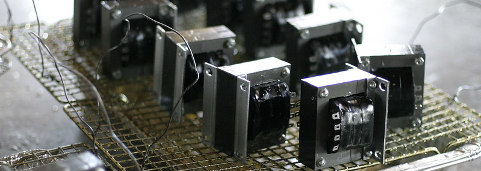

library("midfielddata")
library("data.table")
library("dplyr", warn.conflicts = FALSE)
library("tidyr")
library("wrapr")Basic transforms

Using base R, data.table, and dplyr/tidyr to transform MIDFIELD data as needed for your analysis.
In this section we demonstrate adding and removing columns, editing column names, creating two new columns by splitting a character column, converting the class of a column, and recoding the values in a column.
Setup
Load packages.
Format data as described in the Introduction.
data(student, term)# base R
student_df <- data.frame(student)
term_df <- data.frame(term)Adding columns
Task. Add a column to the student table for total SAT score.
columns_we_want <- c("mcid", "sat_math", "sat_verbal", "act_comp")# base R
result_df <- student_df[, columns_we_want, drop = FALSE]
result_df$sat_total <- result_df$sat_math + result_df$sat_verbal# data.table
result_dt <- student_dt[, ..columns_we_want]
result_dt[, sat_total := sat_math + sat_verbal]result_dt
#> mcid sat_math sat_verbal act_comp sat_total
#> <char> <num> <num> <num> <num>
#> 1: MCID3111142225 NA NA NA NA
#> 2: MCID3111142283 560 230 NA 790
#> 3: MCID3111142290 510 380 NA 890
#> 4: MCID3111142294 640 460 NA 1100
#> 5: MCID3111142299 600 500 NA 1100
#> ---
#> 97551: MCID3112898886 530 560 29 1090
#> 97552: MCID3112898890 570 580 25 1150
#> 97553: MCID3112898894 510 590 24 1100
#> 97554: MCID3112898895 420 590 32 1010
#> 97555: MCID3112898940 470 540 32 1010
check_equiv_frames(result_df, result_dt)
#> [1] TRUE
check_equiv_frames(result_dt, result_tbl)
#> [1] TRUEComments
base R.
df$new_colcreates the new column.data.table.
:=alters or creates columns “in place”. Thedata.tableat hand gets altered instead of a new one being created.dplyr. New columns are created with
mutate().
Removing columns
In previous examples, when selecting some columns we have implicitly removed every column not selected (if any). Here we explicitly select the columns to be removed.
Task. Using the results from the previous example, remove the SAT math and verbal columns.
# base R
result_df[c("sat_math", "sat_verbal")] <- NULL# data.table
result_dt[, c("sat_math", "sat_verbal") := NULL]result_dt
#> mcid act_comp sat_total
#> <char> <num> <num>
#> 1: MCID3111142225 NA NA
#> 2: MCID3111142283 NA 790
#> 3: MCID3111142290 NA 890
#> 4: MCID3111142294 NA 1100
#> 5: MCID3111142299 NA 1100
#> ---
#> 97551: MCID3112898886 29 1090
#> 97552: MCID3112898890 25 1150
#> 97553: MCID3112898894 24 1100
#> 97554: MCID3112898895 32 1010
#> 97555: MCID3112898940 32 1010
check_equiv_frames(result_df, result_dt)
#> [1] TRUE
check_equiv_frames(result_dt, result_tbl)
#> [1] TRUEComments
base R.
data.table. Use a vector of column names and
:=to remove the columns “in place”.dplyr. Use
select()with minus signs.
Editing column names
Task. Using the results from the previous example, rename the columns.
In each case, we take care to explicitly match old and new names.
result_dt
#> Student ACT SAT
#> <char> <num> <num>
#> 1: MCID3111142225 NA NA
#> 2: MCID3111142283 NA 790
#> 3: MCID3111142290 NA 890
#> 4: MCID3111142294 NA 1100
#> 5: MCID3111142299 NA 1100
#> ---
#> 97551: MCID3112898886 29 1090
#> 97552: MCID3112898890 25 1150
#> 97553: MCID3112898894 24 1100
#> 97554: MCID3112898895 32 1010
#> 97555: MCID3112898940 32 1010
check_equiv_frames(result_df, result_dt)
#> [1] TRUE
check_equiv_frames(result_dt, result_tbl)
#> [1] TRUEComments
base R. While other approaches work too, this approach ensures that old and new names are explicitly matched.
data.table.
setnames()edits the column names in place.dplyr.
rename()usesnew_name = old_namesyntax.
Split a character column
Task. In the term data, create new columns for year YYYY and term code T by splitting the character term column.
In each system, we use the base R substr() function to split the term character value into a 4-character year in one new column and a 1-character term-code in a new second column. We also drop rows with missing values (if any).
columns_we_want <- c("mcid", "term")options(datatable.print.topn = 5)
result_dt
#> mcid term year term_code
#> <char> <char> <char> <char>
#> 1: MCID3111142225 19881 1988 1
#> 2: MCID3111142283 19881 1988 1
#> 3: MCID3111142283 19883 1988 3
#> 4: MCID3111142283 19885 1988 5
#> 5: MCID3111142283 19891 1989 1
#> ---
#> 639911: MCID3112898886 20181 2018 1
#> 639912: MCID3112898890 20181 2018 1
#> 639913: MCID3112898894 20181 2018 1
#> 639914: MCID3112898895 20181 2018 1
#> 639915: MCID3112898940 20181 2018 1
check_equiv_frames(result_df, result_dt)
#> [1] TRUE
check_equiv_frames(result_dt, result_tbl)
#> [1] TRUEComments
base R.
data.table.
dplyr.
Convert column class
Task. Using the results from the previous example, convert character year to numerical class.
# base R
result_df$year <- as.double(result_df$year)# data.table
result_dt[, year := as.double(year)]result_dt
#> mcid term year term_code
#> <char> <char> <num> <char>
#> 1: MCID3111142225 19881 1988 1
#> 2: MCID3111142283 19881 1988 1
#> 3: MCID3111142283 19883 1988 3
#> 4: MCID3111142283 19885 1988 5
#> 5: MCID3111142283 19891 1989 1
#> ---
#> 639911: MCID3112898886 20181 2018 1
#> 639912: MCID3112898890 20181 2018 1
#> 639913: MCID3112898894 20181 2018 1
#> 639914: MCID3112898895 20181 2018 1
#> 639915: MCID3112898940 20181 2018 1
check_equiv_frames(result_df, result_dt)
#> [1] TRUE
check_equiv_frames(result_dt, result_tbl)
#> [1] TRUEComments
base R.
data.table.
dplyr.
Recode column values
Task. Using the results from the previous example, recode the term-codes from numbers to academic terms “Fall”, “Winter”, etc.
“Recoding” typically entails replacing existing values in a column with new, recoded values. For the sake of clarity in this example we assign the new encodings to a new column—not strictly necessary but it makes it easier to check the results. The existing column is term_code; the new column is term_name.
# base R
result_df <- within(result_df, {
term_name <- NA
term_name[term_code == "1"] <- "Fall"
term_name[term_code == "2"] <- "Winter"
term_name[term_code == "3"] <- "Spring"
term_name[term_code == "4"] <- "Summer 1"
term_name[term_code == "5"] <- "Summer 2"
term_name[term_code == "6"] <- "Summer 3"
})# data.table
result_dt[, term_name := fcase(
term_code == "1", "Fall",
term_code == "2", "Winter",
term_code == "3", "Spring",
term_code == "4", "Summer 1",
term_code == "5", "Summer 2",
term_code == "6", "Summer 3"
)]# dplyr
result_tbl <- result_tbl %>%
mutate(term_name = case_match(
term_code,
"1" ~ "Fall",
"2" ~ "Winter",
"3" ~ "Spring",
"4" ~ "Summer 1",
"5" ~ "Summer 2",
"6" ~ "Summer 3"
))result_dt
#> mcid term year term_code term_name
#> <char> <char> <num> <char> <char>
#> 1: MCID3111142225 19881 1988 1 Fall
#> 2: MCID3111142283 19881 1988 1 Fall
#> 3: MCID3111142283 19883 1988 3 Spring
#> 4: MCID3111142283 19885 1988 5 Summer 2
#> 5: MCID3111142283 19891 1989 1 Fall
#> ---
#> 639911: MCID3112898886 20181 2018 1 Fall
#> 639912: MCID3112898890 20181 2018 1 Fall
#> 639913: MCID3112898894 20181 2018 1 Fall
#> 639914: MCID3112898895 20181 2018 1 Fall
#> 639915: MCID3112898940 20181 2018 1 Fall
check_equiv_frames(result_df, result_dt)
#> [1] TRUE
check_equiv_frames(result_dt, result_tbl)
#> [1] TRUEComments
base R.
within()is similar towith()but allows us to modify a data frame. We create the new column withterm_name <- NAthen systematically edit its values based on the values interm_code.data.table.
term_nameis created using:=thenfcase()assigns its values based on logical expressions operating onterm_code.dplyr.
term_nameis created usingmutate()thencase_match()assigns its values by finding matches to theterm_codevalues.